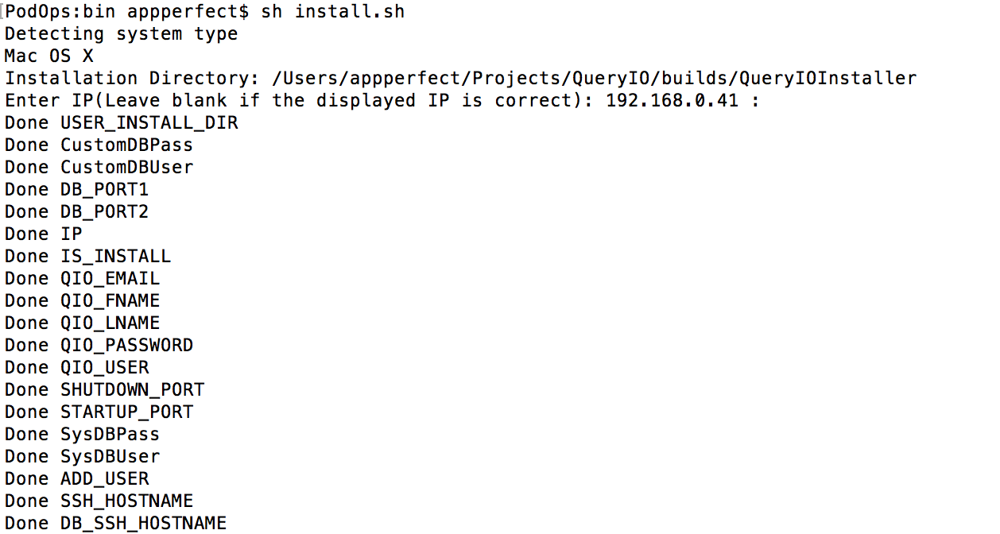

QueryIO: Big Data Analytics - Installation
In this chapter
This chapter explains about QueryIO Installation. When you
install QueryIO, a number of components are installed, including Hadoop,
databases, libraries, services, agents, etc.
Installation
Open a terminal window and change the current directory to the location where you have saved QueryIO installer, then switch to bin directory.
There you can check $USER_INSTALL_DIR/bin/qio-setup.properties for configuration set up, update if any else keep them as it is. Now type the following command and press the Enter key.
- sh install.sh
- This will launch the QueryIO installer in console mode.
Local Installation
- Press <ENTER> to install QueryIO

- Press <ENTER> to continue installation when asked of IP else enter the correct IP.
- Installation Complete
- After installation is complete, After installation you start queryio using "sh start_queryio.sh" command. Press <ENTER> to Start QueryIO server
Click here to see how quickly you can setup a cluster using QueryIO, perform data read/write operations and use standard SQL to query your BigData
Copyright © 2017 QueryIO Corporation. All Rights Reserved.
QueryIO, "Big Data Intelligence" and the QueryIO Logo are trademarks
of QueryIO Corporation. Apache, Hadoop and HDFS are trademarks of The Apache Software Foundation.